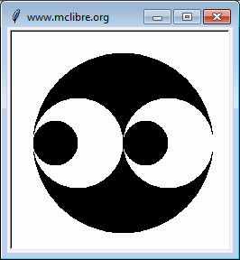
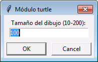
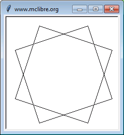
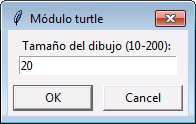
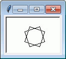
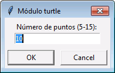
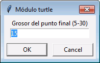
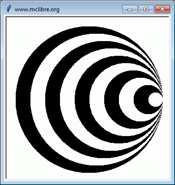

Escriba un programa que pida dos números y diga la distancia entre ellos.
Nota: Haga este ejercicio sin utilizar la función valor absoluto abs().
DISTANCIA Escriba un número: 8 Escriba otro número: 4 La distancia entre 8.0 y 4.0 es 4.0
DISTANCIA Escriba un número: 7 Escriba otro número: 10 La distancia entre 7.0 y 10.0 es 3.0
DISTANCIA Escriba un número: 5.5 Escriba otro número: 5.5 La distancia entre 5.5 y 5.5 es 0.0
DISTANCIA Escriba un número: -6 Escriba otro número: 6 La distancia entre -6.0 y 6.0 es 12.0
Escriba un programa que pida tres números y diga si el tercero está más cerca del primero o del segundo.
Nota: Haga este ejercicio sin utilizar la función valor absoluto abs(), pero utilizando el ejercicio 1.
MÁS CERCA, MÁS LEJOS Escriba un número: 6 Escriba otro número: 8 Escriba otro número más: 3 3.0 está más cerca de 6.0 que de 8.0
MÁS CERCA, MÁS LEJOS Escriba un número: -10 Escriba otro número: 5 Escriba otro número más: 0 0.0 está más cerca de 5 que de -10.0
MÁS CERCA, MÁS LEJOS Escriba un número: 7 Escriba otro número: 7 Escriba otro número más: 10 10.0 está a la misma distancia de 7.0 que de 7.0
Escriba un programa que pida un número y una cantidad de valores y que al final diga cuántos valores son superiores al número inicial. La cantidad de valores no puede ser negativa.
MAYORES QUE Escriba un número entero: 5 ¿Cuántos valores va a introducir? 4 Escriba un número: 6 Escriba un número: 2 Escriba un número: -3 Escriba un número: 5.5 Ha escrito 2 valores mayores que 5
Escriba un programa que genere el siguiente dibujo. El ancho del dibujo es 200 px.

Escriba un programa que genere el siguiente dibujo. La ventana debe ajustarse automáticamente al tamaño solicitado por el usuario.
 
 
Escriba un programa que genere el siguiente dibujo. La ventana debe ajustarse automáticamente al tamaño solicitado por el usuario. El dibujo está en el primer cuadrante.
  